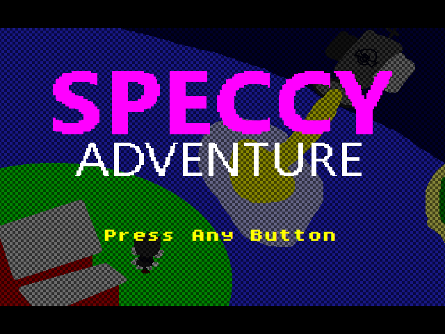
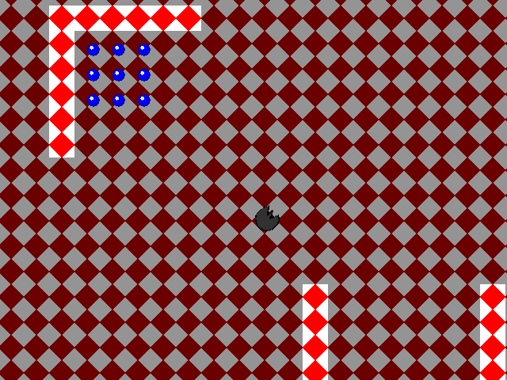

Games
Speccy Adventure Remake
Speccy Adventure was a singleplayer TGF game
made in 2022. It was lost alongside many other projects, but I have started work on remaking it.
It'll still be singleplayer, but the game will be expanded upon with new zones and gimmicks as I work on it.
You can download it here: 
Screenshots

